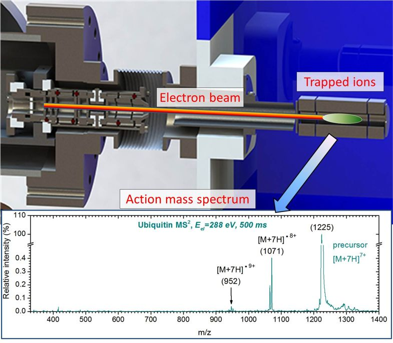
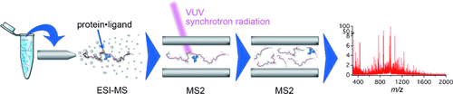
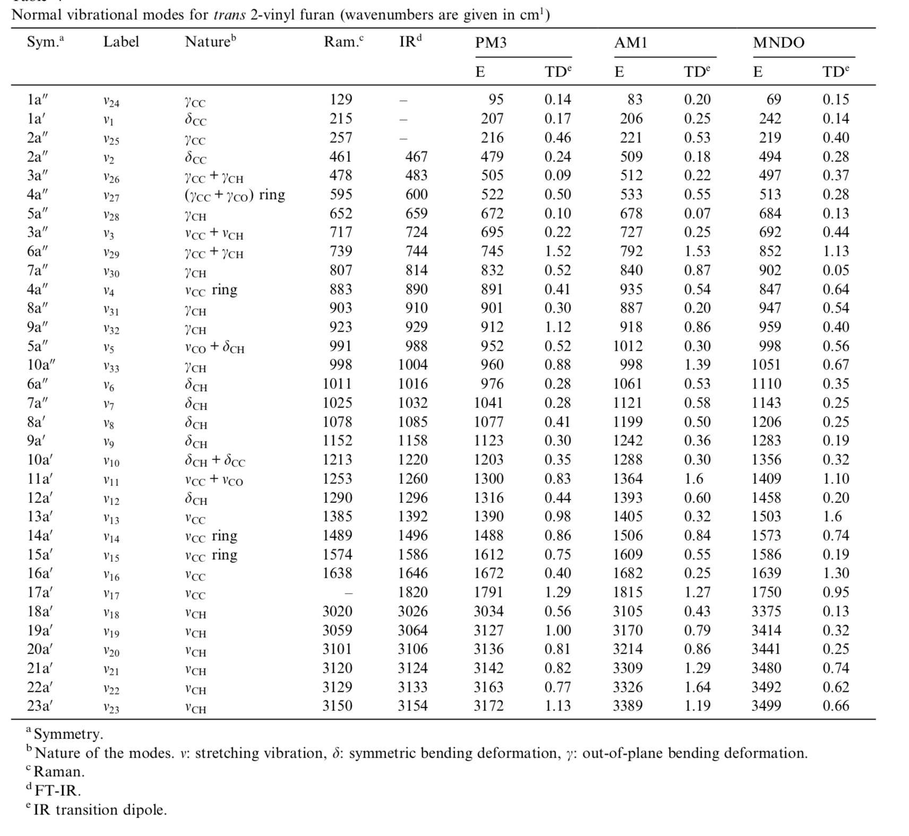

Alexandre Giuliani
Spectroscopy & Spectrometry
Do not hesitate to email me for a pdf copy 1. You may see also my [ORCID page, my Google scholar profile for an up to date list. Some preprints are available from my institution repository Prodinra.
Scientific production
Publications
2019
- 103. «Vacuum-UV induced DNA strand breaks – influence of the radiosensitizers 5-bromouracil and 8-bromoadenine» S. Vogel, K. Ebel, C. Heck, R. M. Schürmann, A. R. Milosavljević, A. Giuliani, Ilko Bald*, Phys. Chem. Chem. Phys. 21 (2019) 1972-1979. doi:10.1039/C8CP06813E
- 102. «Tuning photoionization mechanisms of molecular hybrid materials for EUV lithography applications» L. Wu, M. Tiekink, A. Giuliani, L. Nahon, S. Castellanos*, J. Mater. Chem. C 7 (2019) 33-37. doi:10.1039/C8TC05273E
2018
- 101. «Spectroscopy and Photodissociation of the Perfluorooctanoate Anion» S. Douix, H. Dossmann, E. Nicol, D. Duflot, A. Giuliani*, Chemistry – A European Journal 24 (2018) 15572 – 15576. doi:10.1002/chem.201801997

- 100. «Extreme ultraviolet (XUV) radiation: a means of ion activation for tandem mass spectrometry» A. Giuliani*, J. P. Williams, M. R. Green*, Anal. Chem. 90 (2018) 7176–7180. doi:10.1021/acs.analchem.8b01789
- 99. «Radical Anions of Oxidized vs. Reduced Oxytocin: Influence of Disulfide Bridges on CID and Vacuum UV Photo-Fragmentation» L. MacAleese*, M. Girod, L. Nahon, A. Giuliani, R. Antoine, P. Dugourd, J. Am. Soc. Mass Spectrom. 29 (2018) 1826-1834. doi:10.1007/s13361-018-1989-8
- 98. «Carotenoids: Experimental Ionization Energies and Capacity at Inhibiting Lipid Peroxidation in a Chemical Model of Dietary Oxidative Stress», P. Goupy, M. Carail, A. Giuliani, D. Duflot, O. Dangles*, C. Caris-Veyrat, J. Phys. Chem. B 122 (2018) 5860–5869. doi:10.1021/acs.jpcb.8b03447
- 97. «Photo-Induced Fragmentation of a Tin-Oxo Cage Compound» J. Haitjema, L. Wu, A. Giuliani, L. Nahon, S. Castellanos, A. M. Brouwer*, J. Photopolym. Sci. Technol. 31(2) (2018) 243–247. doi:10.2494/photopolymer.31.243

- 96. «MS/MS-Guided Isolation of Clarinoside, a New Anti-Inflammatory Pentalogin Derivative» C. Audoin, A. Zampalégré, N. Blanchet, A. Giuliani, E. Roulland, O. Laprévote, G. Genta-Jouve*, Molecules 23 (2018) 1237. doi:10.3390/molecules23051237

2017
- 95. «Photoionization of the Buckminsterfullerene Cation» S. Douix, D. Duflot, D. Cubaynes, J.-M. Bizau, A. Giuliani*, J. Phys. Chem. Lett. 8 (2016) 7-12. doi:10.1021/acs.jpclett.6b02558

- 94. «Gas-Phase Structural and Optical Properties of Homo- and Heterobimetallic Rhombic Dodecahedral Nanoclusters [Ag14–nCun(C≡CtBu)12X]+ (X = Cl and Br): Ion Mobility, VUV and UV Spectroscopy, and DFT Calculations» S. Daly , C. M. Choi , A. Zavras, M. Krstić, F. Chirot , T. U. Connell, S. J. Williams , P. S. Donnelly, R. Antoine , A. Giuliani , V. Bonačić-Koutecký*, P. Dugourd*, R. A. J. O’Hair*, J. Phys. Chem. C, 121(20) (2017) 10719–10727. doi:10.1021/acs.jpcc.7b02663

- 93. «Investigation of secondary structure evolution of micellar casein powder upon aging by FTIR and SRCD: consequences on solubility» S. Nasser, A. Hédoux, A. Giuliani, C. Le Floch-Fouéré, V. Santé-Lhoutellier, I. de Waele, G. Delaplace*, J. Sci. Food Agric. 98 (2017) 2243-2250. doi:10.1002/jsfa.8711
- 92. «Multiple electron capture from isolated protein poly-anions in collision with slow highly charged ions» A. R. Milosavljević*, P. Rousseau, A. Domaracka, B. A. Huber, A. Giuliani, Phys. Chem. Chem. Phys. 19 (2017)19691-19698. doi:10.1039/C7CP02075A
- 91. «Polyaromatic disordered carbon grains as carriers of the UV bump: Far-UV to mid-IR spectroscopy of laboratory analogs» L. Gavilan*, K.C. Le, T. Pino, I. Alata, A. Giuliani, E. Dartois, Astronomy & Astrophysics 607 (2017) A73. doi:10.1051/0004-6361/201730712

- 90. «SOLEIL shining on the solution-state structure of biomacromolecules by synchrotron X-ray footprinting at the Metrology beamline» A. Baud, L. Aymé, F. Gonnet, I. Salard, Y. Gohon, P. Jolivet, K. Brodolin, P. Da Silva, A. Giuliani, B. Sclavi, T. Chardot, P. Mercère, P. Roblin, R. Daniel*, J. Synchrotron Rad. 24 (2017) 576-585. doi:10.1107/S1600577517002478
- 89. «Structural proteomics: Topology and relative accessibility of plant lipid droplet associated proteins» P. Jolivet, L. Aymé, A. Giuliani, F. Wien, T. Chardot, Y. Gohon*, J. proteomics 169 (2017) 87-98. doi:10.1016/j.jprot.2017.09.005

2016
- 88. «Charge Transfer Dissociation of Complex Oligosaccharides: Comparison with Collision-Induced Dissociation and Extreme Ultraviolet Dissociative Photoionization» D. Ropartz, P. Li, M. Fanuel, A. Giuliani, H. Rogniaux*, G.P. Jackson, J. Am. Soc. Mass Spectrom. 27 (2016) 1614-1619. doi:10.1007/s13361-016-1453-6
- 87. «Online coupling of high-resolution chromatography with extreme UV photon activation tandem mass spectrometry: Application to the structural investigation of complex glycans by dissociative photoionization» D. Ropartz*, A. Giuliani, M. Fanuel, C. Hervé, M. Czjzek, H. Rogniaux, Analytica Chim. Acta 933 (2016) 1-9. doi:10.1016/j.aca.2016.05.036

- 86. «Single-Photon, Double Photodetachment of Nickel Phthalocyanine Tetrasulfonic Acid 4- Anions» S. Daly, M. Girod, M. Vojkovic, A. Giuliani, R. Antoine, L. Nahon, R. A. J. O’Hair*, P. Dugourd*, J. Phys. Chem. Lett. 7 (2016) 2586-2590. doi:10.1021/acs.jpclett.6b01030

- 85. «Design and performance of an instrument for electron impact tandem mass spectrometry and action spectroscopy of mass/charge selected macromolecular ions stored in RF ion trap» M. Lj. Rankovic, A. Giuliani, A. R. Milosavljevic*, Eur. J. Phys. D 70 (2016) 125. doi:10.1140/epjd/e2016-70108-7

- 84. «Probing the solution structure of Factor H using hydroxyl radical protein footprinting and cross-linking» A. Baud, F. Gonnet, I. Salard, M. Le Mignon, A. Giuliani, P. Mercère, B. Sclavi, R. Daniel*, Biochemical Journal 473 (2016) 1805-1819. doi:10.1042/BCJ20160225
- 83. «VUV photo-processing of PAH cations: quantitative study on the ionization versus fragmentation processes» J. Zhen, S. Rodriguez Castillo, C. Joblin*, G. Mulas, H. Sabbah, A. Giuliani, L. Nahon, S. Martin, J.-P. Champeaux, P. M. Mayer, The Astrophysical Journal 822 (2016). doi:10.3847/0004-637X/822/2/113

- 82. «Electron impact action spectroscopy of mass / charge selected macromolecular ions : Inner-shell excitation of ubiquitin protein Electron impact action spectroscopy of mass / charge selected macromolecular ions : Inner-shell excitation of ubiquitin protein» M. Lj. Rankovic, A. Giuliani*, A. R. Milosavljevic*, Appl. Phys. Lett. 108 (2016 ) 064101. doi:10.1063/1.4941798

- 81. «VUV spectroscopy of carbon dust analogs: contribution to interstellar extinction» L. Gavilan*, I. Alata, K.C. Le, T. Pino, A. Giuliani, E Dartois, Astronomy and Astrophysics 586 (2015) A106. doi:10.1051/0004-6361/201527098

2015
- 80. «VUV action spectroscopy of protonated leucine-enkephalin peptide in the 6-14 eV range» M. Lj. Ranković, F. Canon, L. Nahon, A. Giuliani and A. R. Milosavljević*, J. Chem. Phys. 143 (2015 ) 244311. doi:10.1063/1.4939080
- 79. «Using DNA Origami Nanostructures to Determine Absolute Cross Sections for UV Photon-Induced DNA Strand Breakage» S. Vogel, J. Rackwitz, R. Schürmann, J. Prinz, A. R. Milosavljevic, M. Refregiers, A. Giuliani, I. Bald*, J. Phys. Chem. Lett. 6 (2015 ) 4589–4593. doi:10.1021/acs.jpclett.5b02238

- 78. «K-Shell Excitation and Ionization of a Gas-Phase Protein: Interplay between Electronic Structure and Protein Folding» A. R. Milosavljević*, C. Nicolas, M. L. Ranković, F. Canon, C. Miron, and A. Giuliani, J. Phys. Chem. Lett. 6 (2015 ) 3132–3138. doi:10.1021/acs.jpclett.5b01288
- 77. «Gas-phase VUV Photoionisation and Photofragmentation of the Silver Deuteride Nanocluster [Ag10D8L6]2+ (L = bis(diphenylphosphino)methane). A Joint Experimental and Theoretical Study» S. Daly, M. Krstic, A. Giuliani, R. Antoine, L. Nahon, A. Zavras, G. N. Khairallah, V. Bonacic-Koutecky*, P. Dugourd*, R. A. J. O'Hair*, Phys. Chem. Chem. Phys. 17 (2015) 25772-25777. doi:10.1039/c5cp01160d

- 76. «Binding site of different tannins on a human salivary proline-rich protein evidenced by dissociative photoionization tandem mass spectrometry» F. Canon*, S. Ployon, J.-P. Mazauric, P. Sarni-Manchado, M. Réfrégiers, A. Giuliani, V. Cheynier, Tetrahedron 71 (2015) 3039-3044. doi:10.1016/j.tet.2014.11.013

- 75. «Action spectroscopy of a protonated peptide in the ultraviolet range» F. Canon, A. R. Milosavljević, L. Nahon, A. Giuliani*, Phys. Chem. Chem. Phys. 39 (2015) 25725-25733 doi:10.1039/c4cp04762a
- 74. «X-ray-induced radiophotodynamic therapy (RPDT) using lanthanide micelles: Beyond depth limitations» S. Kaščáková, A. Giuliani, S. Lacerda, A. Pallier, P. Mercère, E. Tóth, M. Réfrégiers*, Nano Res. 8 (2015) 2373–9. doi:10.1007/s12274-015-0747-5

- 73. /«Exploring the peptide fragmentation mechanisms under atmospheric pressure photoionization using tunable VUV synchrotron radiation » / M. Méjean, A. Giuliani, A. Brunelle, D. Touboul*, Int. J. Mass Spectrom. 379 (2015) 80-86. doi:10.1016/j.ijms.2014.12.011

- 72. «High-energy photon activation tandem mass spectrometry provides unprecedented insights into the structure of highly sulfated oligosaccharides extracted from macroalgal cell walls» D. Ropartz, A. Giuliani, C. Hervé, A. Geairon, M. Jam, M. Czjzek, H. Rogniaux*, Anal. Chem. 87(2) (2015) 1042-1049. doi:10.1021/ac5036007

2014
- 71. «Determination of ionization energies of a monoterpene series by atmospheric pressure photoionization using tunable vacuum ultraviolet synchrotron radiation» M. Méjean, A. Giuliani, A. Brunelle, D. Touboul*, Eur. J. Mass Spectrom. 20 (2014) 403-407. doi:10.1255/ejms.1291
- 70. «X-ray induced fragmentation of size-selected salt cluster-ions stored in an ion trap» M. J. Ryding*, A. Giuliani, M. Patanen, J. Niskanen, G. Simões, G. B. S. Miller, E. Antonsson, T. Jokinen, C. Miron, O. Björneholm, K. Hansen, K. J. Børve, E. Uggerud*, RSC Advances 4 (2014) 47743-47751. doi:10.1039/c4ra09787d
- 69. «Energy-Dependent UV Photodissociation of Gas-Phase Adenosine Monophosphate Nucleotide Ions: The Role of a Single Solvent Molecule» A. R. Milosavljevic*, V. Z. Cerovski, F. Canon, M. L. Ranković, N. Škoro, L. Nahon, A. Giuliani, J. Phys. Chem. Lett. 5 (2014) 1994-1999. doi:10.1021/jz500696b

- 68. «Multiple Electron Ejection from Proteins Resulting from Single-Photon Excitation in the Valence Shell» R. Antoine*, Q. Enjalbert, L. MacAleese, P. Dugourd, A. Giuliani, L. Nahon, The Journal of Physical Chemistry Letters 5 (2014) 1666–1671. doi:10.1021/jz500489s
- 67. «VUV photofragmentation of protonated leucine-enkephalin peptide dimer below ionization energy» A. R. Milosavljević*, V. Z. Cerovski, M. L. Ranković, F. Canon, L. Nahon, A. Giuliani, The European Physical Journal D 68 (2014) 68. doi:10.1140/epjd/e2014-40826-y
- 66. «Contribution of Synchrotron Radiation to photoactivation studies of biomolecular ions in the gas phase» A. Giuliani*, A. R. Milosavljević, F. Canon, L. Nahon, Mass Spectrom. Rev. 33(6) (2014) 424-441. doi:10.1002/mas.21398
- 65. /«Synthetic oligomer analysis using atmospheric pressure photoionization mass spectrometry at different photon energies » / B. Desmazières, V. Legros, A. Giuliani, W. Buchmann*, Analytica Chim. Acta 808 (2014) 220–230. doi:10.1016/j.aca.2013.11.036

- 64. «Deciphering the structure of isomeric oligosaccharides in a complex mixture by tandem mass spectrometry: Photon activation with vacuum ultra-violet brings unique information and enables definitive structure assignment» D. Ropartz*, J. Lemoine, A. Giuliani, Y. Bittebière, Q. Enjalbert, R. Antoine, P. Dugourd, M. C. Ralet, H. Rogniaux, Analytica Chim. Acta 807 (2014) 84-95. doi:10.1016/j.aca.2013.11.018

2013
- 63. «Characterization of Hydrophobic Peptides in the Presence of Detergent by Photoionization Mass Spectrometry» A. Bagag, J.-M. Jault, N. Sidahmed-Adrar, M. Réfrégiers, A. Giuliani, F. Le Naour*, PLoS ONE 8 (2013) e79033. doi:10.1371/journal.pone.0079033
- 62. «Photodissociation and Dissociative Photoionization Mass Spectrometry of Proteins and Noncovalent Protein-Ligand Complexes» F. Canon, A. R. Milosavljević, G. van der Rest, M. Réfrégiers, L. Nahon, P. Sarni-Manchado, V. Cheynier, A. Giuliani*, Angew. Chem. Int. Ed. 52 (2013) 8377–81. doi:10.1002/anie.201304046

- 61. «Nanosolvation-Induced Stabilization of a Protonated Peptide Dimer Isolated in the Gas Phase» A. R. Milosavljević*, V. Z. Cerovski, F. Canon, L. Nahon and A. Giuliani*, Angew. Chem. Int. Ed. 52 (2013) 7286–90. doi:10.1002/anie.201301667

- 60. «Valence shell direct double photodetachment in polyanions» C. Brunet, R. Antoine, P. Dugourd, D. Duflot, F. Canon, A. Giuliani*, L. Nahon, New J. Phys. 15 (2013) 063024. doi:10.1088/1367-2630/15/6/063024

- 59. «Vacuum Ultraviolet Action Spectroscopy of Polysaccharides» Q. Enjalbert, C. Brunet, A. Vernier, A.-R. Allouche, R. Antoine*, P. Dugourd, J. Lemoine, A. Giuliani, L. Nahon, J. Am. Soc. Mass Spectrom. 24 (2013) 1271–9. doi:10.1007/s13361-013-0657-2

- 58. «VUV photochemistry simulation of planetary upper atmosphere using synchrotron radiation» N. Carrasco*, A. Giuliani*, J.-J. Correia, G. Cernogora, J. Synchrotron Rad. 20 (2013) 587–90. doi:10.1107/S0909049513013538

- 57. «Fold of an oleosin targeted to cellular oil bodies» J.-D. Vindigni, F. Wien, A. Giuliani, Z. Erpapazoglou, R. Tache, F. Jagic, T. Chardot, Y. Gohon, M. Froissard*, Biochim. Biophys. Acta 1828 (2013) 1881–8. doi:10.1016/j.bbamem.2013.04.009
- 56. «Titan's atmosphere simulation experiment using continuum UV-VUV synchrotron radiation» Z. Peng, T. Gautier, N. Carrasco*, P. Pernot, A. Giuliani*, A. Mahjoub, J.-J. Correia, A. Buch, Y. Bénilan, C. Szopa, G. Cernogora, J. Geograph. Res. Planets. 118 (2013) 778-788 doi:10.1002/jgre.20064

- 55. «Aggregation of the salivary proline-rich protein IB5 in presence of the tannin EgCG» F. Canon, F. Paté, V. Cheynier, P. Sarni-Manchado, A. Giuliani, J. Pérez, D. Durand, J. Li, B. Cabane*, Langmuir 29(6) (2103) 1926–1937. doi:10.1021/la3041715

- 54. «Photo-induced electron detachment of protein polyanions in the VUV range» C. Brunet, R. Antoine*, P. Dugourd, F. Canon, A. Giuliani, L. Nahon, J. Chem. Phys. 138 (2013) 064301. doi:10.1063/1.4790165
2012
- 53. «Structure and Charge-State Dependence of the Gas-Phase Ionization Energy of Proteins» A. Giuliani*, A.R. Milosavljević, K. Hinsen, F. Canon, C. Nicolas, M. Réfrégiers, L. Nahon, Angew. Chem. Int. Ed. 51(38) (2012) 9552-9556. doi:10.1002/anie.201204435
- 52. «DISCO synchrotron-radiation circular-dichroism endstation at SOLEIL» M. Réfrégiers*, F. Wien, H.-P. Ta, L. Premvardhan, S. Bac, F. Jamme, V. Rouam, B. Lagarde, F. Polack, J.-L. Giorgetta, J.-P. Ricaud, M. Bordessoule, A. Giuliani, J. Synchrotron Rad., 19 (2012) 831-835. doi:10.1107/S0909049512030002

- 51. «Atmospheric pressure photoionization study of post-translational modifications: The case of palmitoylation» A. Bagag, A. Giuliani, M. Réfrégiers, F. Le Naour*, Int. J. Mass Spectrom. 328-329 (2012) 23-27. doi:10.1016/j.ijms.2012.07.021
- 50. «Atmospheric pressure photoionization mass spectrometry of guanine using tunable synchrotron VUV radiation» J. Allegrand, D. Touboul*, A. Giuliani, A. Brunelle, O. Laprévote, Int. J. Mass Spectrom. 321-322 (2012) 14–8. doi:10.1016/j.ijms.2012.05.009
- 49. «Atmospheric pressure photoionization using tunable VUV synchrotron radiation» A. Giuliani*, J.-L. Giorgetta, J.-P Ricaud, F. Jamme, V. Rouam, F. Wien, O. Laprévote, M. Réfrégiers, Nucl. Instrum. Methods Phys. Res. B, 279 (2012) 114-117. doi:10.1016/j.nimb.2011.10.038
- 48. «Fast in vacuo photon shutter for synchrotron radiation quadrupole ion trap tandem mass spectrometry» A.R. Milosavljević*, C. Nicolas, J.-F. Gil, F. Canon, M. Réfrégiers, L. Nahon, A. Giuliani, Nucl. Instrum. Methods Phys. Res. B, 279 (2012) 34-36. doi:10.1016/j.nimb.2011.10.032
- 47. «Mid- and far-infrared absorption spectroscopy of Titan’s aerosols analogues» T. Gautier*, N. Carrasco, A. Mahjoub, S. Vinatier, A. Giuliani, C. Szopa, C.M. Anderson, J.-J. Correia, P. Dumas, G. Cernogora, Icarus 221 (2012) 320–327. doi:10.1016/j.icarus.2012.07.025
- 46. «Gas-Phase Protein Inner-Shell Spectroscopy by Coupling an Ion Trap with a Soft X-ray Beamline» A. R. Milosavljević*, F. Canon, C. Nicolas, C. Miron, L. Nahon, A. Giuliani*. J. Phys. Chem. Lett., 3 (2012) 1191−1196. doi:10.1021/jz300324z
- 45. «VUV synchrotron radiation: a new activation technique for tandem mass spectrometry» A. R. Milosavljević, C. Nicolas, J.-F. Gil, F. Canon, M. Réfrégiers, L. Nahon, A. Giuliani*, J. Synchrotron Rad., 19 (2012) 174–178. doi:10.1107/S0909049512001057
- 44. «Formation and Fragmentation of Radical Peptide Anions: Insights from Vacuum Ultra Violet Spectroscopy» C. Brunet, R. Antoine*, P. Dugourd, F. Canon, A. Giuliani, L. Nahon, J. Am. Soc. Mass Spectrom. 23(2) (2012) 274-281. doi:10.1007/s13361-011-0285-7
2011
- 43. «Separation of peptides from detergents using ion mobility spectrometry» A. Bagag, A. Giuliani, F. Canon, M. Refregiers, F. Le Naour*, Rapid Commun. Mass Spectrom. 25 (2011) 3436-3440. doi:10.1002/rcm.5242

- 42. «Gas Phase Photo-Formation and Vacuum UV Photofragmentation Spectroscopy of Tryptophan and Tyrosine Radical Containing Peptides» C. Brunet, R. Antoine*, B.-R. Allouche, P. Dugourd, F. Canon, A. Giuliani, L. Nahon, J. Phys. Chem. A, 115 (2011) 8933-8939. doi:10.1021/jp205617x

- 41. «A differential pumping system to deliver windowless VUV photons at atmospheric pressure» A. Giuliani*, I. Yao, B. Lagarde, S. Rey, J.-P. Duval, P. Rommeluere, F. Jamme, V. Rouam, F. Wien, C. De Oliveira, M. Ros, A. Lestrade, K. Desjardins, J.-L. Giorgetta, O. Laprévote, C. Herbaux, M. Réfrégiers, J. Synchrotron Rad. 18 (2011) 546–549. doi:10.1107/S0909049511016517

- 40. «Photoionization study of Kr+ and Xe+ ions with the combined use of a merged-beam set-up and an ion trap» J. M. Bizau*, C. Blancard, M. Coreno, D. Cubaynes, C. Dehon, N. El Hassan, F. Folkmann, M. F. Gharaibeh, A. Giuliani, J. Lemaire, A.R. Milosavljevic, C. Nicolas, R. Thissen, J. Phys. B. 44 (2011) 055205. doi:10.1088/0953-4075/44/5/055205
- 39. «High water solubility and fold in amphipols of proteins with large hydrophobic regions: oleosins and caleosin from seed lipid bodies» Y. Gohon, J.-D. Vindigni, A. Pallier, F. Wien, H. Celia, A. Giuliani, C. Tribet, T. Chardot, P. Briozzo*, Biochim. Biophys. Acta 1808 (2011) 706–716. doi:10.1016/j.bbamem.2010.12.002
- 38. «Photoionization of a protein isolated in vacuo» A. R. Milosavljevic*, C. Nicolas, J. Lemaire, C. Dehon, R. Thissen, J.-M. Bizau, M. Réfrégiers, L. Nahon, A. Giuliani*, Phys. Chem. Chem. Phys., 13 (2011) 15432-15436. doi:10.1039/c1cp21211g

- 37. «Atmospheric Pressure Photoionization of Peptides» A. Bagag, A. Giuliani*, O. Laprévote, Int. J. Mass Spectrom. 299 (2011) 1-4. doi:10.1016/j.ijms.2010.08.010

2010
- 36. «Structural study of acetogenins by tandem mass spectrometry under high and low collision energy» J. Allegrand, D. Touboul*, I. Schmitz-Afonso, V. Guerineau, A. Giuliani, J. Le Ven, P. Champy, O. Laprévote, Rapid Commun. Mass Spectrom. 24 (2010) 3602-3608. doi:10.1002/rcm.4805
- 35. «Synchrotron UV Fluorescence Microscopy Uncovers New Probes in Cells and Tissues» F. Jamme, S. Vilette, A. Giuliani, V. Rouam, F. Wien, B. Lagarde, M. Réfrégiers*, Microscopy and Microanalysis 16 (2010) 507-514. doi:10.1017/S1431927610093852

- 34. «Ability of a salivary intrinsically unstructured protein to bind different tannin targets revealed by mass spectrometry» F. Canon, A. Giuliani, F. Paté, P Sarni-Manchado, Anal. Bioanal. Chem. 398 (2010) 815-822. doi:10.1007/s00216-010-3997-9

2009
- 33. «Characterization, stoichiometry and stability of salivary protein-tannin complexes by ESI-MS and CID MS/MS» F. Canon, F. Paté, E. Meudec, T. Marlin,V. Cheynier, A. Giuliani, P Sarni-Manchado, Anal. Bioanal. Chem. 395 (2009) 2535-2545. doi:10.1007/s00216-009-3180-3

- 32. «Chemical characterization of Titan’s tholins: Solubility, morphology and molecular structure revisited» N. Carrasco*, I. Schmitz-Afonso, J-Y. Bonnet, E. Quirico, R. Thissen, O. Dutuit, A. Bagag, O. Laprevote, A. Buch, A. Giuliani, G. Adande, F. Ouni, E. Hadamcik, C. Szopa, G. Cernogora, J. Phys. Chem. A, 113 (2009) 11195-11203. doi:10.1021/jp904735q
- 31. «DISCO: a low energy multipurpose beamline at synchrotron SOLEIL» A. Giuliani, F. Jamme, V. Rouam, F. Wien, J.-L. Giorgetta, B. Lagarde, O. Chubar, S. Bac, I Yao, S. Rey, C. Herbeaux, J.-L. Marlats, D. Zerbib, F. Polack, M. Réfrégiers*, J. Synchrotron. Rad. 16 (2009) 1-7. doi:10.1107/S0909049509034049
- 30. «Electronic states of neutral and ionized tetrahydrofuran studied by VUV spectroscopy and ab initio calculations» A. Giuliani*, P. Limao-Vieira, D. Duflot, A.R. Milosavljevic, B.P. Marinkovic, S.V. Hoffmann, N. Mason, J. Delwiche, M.-J. Hubin-Franskin, Eur. J. Phys. D 51 (2009) 97. doi:10.1140/epjd/e2008-00154-7
2008
- 29. «Electronic excitation of gaseous acetic acid studied by K-shell electron energy loss spectroscopy and ab initio calculations» D. Duflot*, J.-P. Flament, A. Giuliani, J. Heinesch, M.-J. Hubin Franskin, Int. J. Mass Spectrom. 277 (2008) 70. doi:10.1016/j.ijms.2008.05.006

- 28. «Atmospheric pressure photoionization mass spectrometry of oligodeoxyribonucleotides» A. Bagag, A. Giuliani, O. Laprévote*, Eur. J. Mass Spectrom. 14 (2008) 71. doi:10.1255/ejms.913

- 27. «Photoionization Cross Section of Xe+ Ion in the Pure 5p5 2P3/2 Ground Level» R. Thissen, J. M. Bizau, C. Blancard, M. Coreno, C. Dehon, P. Franceschi, A. Giuliani, J. Lemaire, C. Nicolas, Phys. Rev. Lett. 100 (2008) 223001. doi:10.1103/PhysRevLett.100.223001

- 26. «Electronic State Spectroscopy of c-C5F8 Explored by Photoabsorption, Electron Impact, Photoelectron Spectroscopies and Ab Initio Calculations» » P. Limao-Vieira*, D. Duflot, A. Giuliani, E. Vasekova, J.M.C. Lourenco, P.M. Santos, S.V. Hoffmann, N.J. Mason, J. Delwiche, M.-J. Hubin-Franskin J. Phys. Chem. A 112 (2008) 2782. doi:10.1021/jp7107939
2007
- 25. «Perfluorocyclobutane electronic state spectroscopy by high-resolution vacuum ultraviolet photoabsorption, electron impact, HeI photoelectron spectroscopy, and ab initio calculations» P. Limao-Vieira*, E. Vasekova, A. Giuliani, J.M.C. Lourenco, P.M. Santos, D. Duflot, S.V. Hoffmann, N.J. Mason, J. Delwiche, M.-J. Hubin-Franskin, Phys. Rev. A 76 (2007) 032509. doi:10.1103/PhysRevA.76.032509

- 24. «C 1s and N 1s core excitation of aniline: Experiment by electron impact and ab initio calculations» D. Duflot, J.-P. Flament, A. Giuliani, J. Heinesch, M. Grogna, M.-J. Hubin-Franskin, Phys. Rev. A 75 (2007) 052719. doi:10.1103/PhysRevA.75.052719
- 23. «Atmospheric pressure photoionization mass spectrometry of nucleic bases, ribonucleosides and ribonucleotides» A. Bagag, A. Giuliani, O. Laprevote*, Int. J. Mass Spectrom. 264 (2007) 1. doi:10.1016/j.ijms.2007.03.010
2006
- 22. «Fragmentation induced in atmospheric pressure photoionization of peptides» D. Debois, A. Giuliani*, O. Laprévote, J. Mass. Spectrom. 41 (2006) 1554. doi:10.1002/jms.1122
- 21. «Electronic structure of hexafluorobenzene by high-resolution vacuum ultraviolet photo-absorption and He(I) photoelectron spectroscopy» C. Motch, A. Giuliani, J. Delwiche , P. Limão-Vieira, N.J. Mason, S.V. Hoffmann, M.-J. Hubin-Franskin*, Chem. Phys. 32 (2006) 183-189. doi:10.1016/j.chemphys.2006.05.032
- 20. «Study of a bisquaternary ammonium salt by atmospheric pressure photoionization mass spectrometry» A. Giuliani*, D. Debois, O. Laprévote, Eur. J. Mass Spectrom. 12 (2006) 189-197. doi:10.1255/ejms.803

- 19. «Acetic acid electronic state pectroscopy by high-resolution vacuum ultraviolet photo-absorption, electron impact, He(I) photoelectron spectroscopy and ab initio calculations » P. Limão-Vieira*, A. Giuliani, J. Delwiche, R. Parafita, R. Mota, D. Duflot, J.-P. Flament, E. Drage, P. Cahillane, N.J. Mason, S.V.Hoffmann, M.-J. Hubin-Franskin, Chem. Phys. 324 (2006) 339-349. doi:10.1016/j.chemphys.2005.10.032

2005
- 18. «Ab initio and experimental study of the K-shell spectra of s-triazine» D. Duflot*, K. Sidhoum, J.-P. Flament, A. Giuliani, J. Heinesch, M.-J. Hubin-Franskin, Eur. J. Phys. D 35 (2005) 239-248. doi:10.1140/epjd/e2005-00193-6
- 17. «Water VUV electronic state spectroscopy by synchrotron radiation» R. Mota, R. Parafita, A. Giuliani, M.-J. Hubin-Franskin , J.M.C. Lourenço¸ G. Garcia, S.V. Hoffmann, N.J. Mason, P.A. Ribeiro,M. Raposo, P. Limão-Vieira*, Chem. Phys. Lett. 416 (2005) 152-159. doi:10.1016/j.cplett.2005.09.073
- 16. «Elastic scattering of electrons from tetrahydrofuran molecule» A. R. Milosavljevic, A. Giuliani, D. Sevic, M.-J. Hubin-Franskin, B. P. Marinkovic*, Eur. J. Phys. D 35 (2005) 411-416. doi:10.1140/epjd/e2005-00191-8

- 15. «Ab initio and experimental study of the K-shell spectra of 2,5-dihydrofuran» D. Duflot*, J.-P. Flament, A. Giuliani, J. Heinesch, M.-J. Hubin-Franskin, Chem. Phys. 310 (2005) 67-75. doi:10.1016/j.chemphys.2004.10.007
2004
- 14. «On the valence shell spectroscopy of 2-vinyl furan» A. Giuliani, I. C. Walker, J. Delwiche, S. Hoffmann, P. Limão-Vieira, N. J. Mason, C. Kech, M.-J. Hubin-Franskin*, J. Chem. Phys. 120 (2004) 10972-10982. doi:10.1063/1.1738642

- 13. «An experimental study of SF5CF3 by electron energy loss spectroscopy, VUV photo-absorption and photoelectron spectroscopy» P. Limão-Vieira*, S. Eden, P. A. Kendall, N. J. Mason, A. Giuliani, J. Heinesch, M. -J. Hubin-Franskin, J. Delwiche, S. V. Hoffmann, Int. J. Mass. Spectrom. 233 (2004) 335-341. doi:10.1016/j.ijms.2004.01.008

- 12. «The electronic states of isoxazole studied by VUV absorption, electron energy loss spectroscopies and ab initio multi-reference configuration interaction calculations» I. C. Walker*, M. H. Palmer, J. Delwiche, S. V. Hoffmann, P. Limao-Vieira, N. J. Mason, M. F. Guest, M.-J. Hubin-Franskin, A. Giuliani, Chem. Phys. 297 (2004) 289-306. doi:10.1016/j.chemphys.2003.10.012

2003
- 11. «Core shell excitation of furan at the O 1s and C 1s edges: An experimental and ab initio study» D. Duflot, J.-P. Flament, A. Giuliani, J. Heinesch, M.-J. Hubin-Franskin, J. Chem. Phys. 119 (2003) 8946-8955. doi:10.1063/1.1606441
- 10. /«Molecular structure and vibrational analysis of 2-vinyl furan » A. Giuliani, B. Gilbert, C. Kech, M.-J. Hubin-Franskin*, Chem. Phys. Lett. 379 (2003) 406–411. doi:10.1016/j.cplett.2003.08.063

- 9. «The electronic states of 2-furanmethanol (furfuryl alcohol) studied by photon absorption and electron impact spectroscopies» A. Giuliani, I. C. Walker, J. Delwiche, S. Hoffmann, P. Limão-Vieira, N. J. Mason, B. Heyne, M. Hoebeke, M.-J. Hubin-Franskin*, J. Chem. Phys. 119 (2003) 7282-7288. doi:10.1063/1.1603733
- 8. «2-methyl furan: an experimental study of the excited electronic levels by electron energy loss spectroscopy, VUV photoabsorption and photoelectron spectroscopy» A. Giuliani, J. Delwiche, S. Hoffmann, P. Limão-Vieira, N. J. Mason, M.-J Hubin-Franskin*, J. Chem. Phys. 119 (2003) 3670-3680. doi:10.1063/1.1590960
- 7. «Electron and photon induced processes in SF5CF3» P. Limão-Vieira*, P. A. Kendall, S. Eden, N. J. Mason, J. Heinesch, M.-J. Hubin-Franskin, J. Delwiche, A. Giuliani, Radiat. Phys. Chem. 68 (2003) 193-197. doi:10.1016/S0969-806X(03)00279-2
- 6. «Thiazyl chloride: an experimental and theoretical study of the valence shell HeI photoelectron spectrum» D. Duflot, N. Chabert, J.-P. Flament, J.-M . Robbe, I. C. Walker, J. H. Cameron, A. Giuliani, J.-M. Hubin-Franskin, J. Delwiche*, Chem. Phys. 288 (2003) 95-104. doi:10.1016/S0301-0104(02)00966-7
2002
- 5. «Electronic excitation and optical cross sections of methylamine and ethylamine in the UV-VUV spectral region» M.-J. Hubin-Franskin*, J. Delwiche, A. Giuliani, M.-P. Ska, F. Motte-Tollet, I. C. Walker, N. J. Mason, J. M. Gingell, N. C. Jones, J. Chem. Phys. 116 (2002) 9261-9268. doi:10.1063/1.1473820

2001
- 4. «Spectroscopic study of the lowest energy triplet states of 2-methyl furan» A. Giuliani, M.-J. Hubin-Franskin*, Chem. Phys. Lett. 348 (2001) 34-38. doi:10.1016/S0009-2614(01)01082-X
- 3. «Lowest energy triplet states of furan, studied by high resolution electron energy loss spectroscopy» A. Giuliani, M.-J. Hubin-Franskin*, Int. J. Mass. Spectrom. 205 (2001) 163-169. doi:10.1016/S1387-3806(00)00318-3

2000
- 2. «Electronic excitation and oscillator strength of ethyl bromide by vacuum ultraviolet photoabsorption and electron energy loss spectroscopy» A. Giuliani, F. Motte-Tollet, J. Delwiche, N.J. Mason, N. C. Jones, J. M. Gingell, I. C. Walker, M.-J. Hubin-Franskin*, J. Chem. Phys. 112 (2000) 6285-6292. doi:10.1063/1.481273
1999
- 1. «Electronic excitation and oscillator strength of ethyl iodide by vacuum ultraviolet photoabsorption and electron energy loss spectroscopy» A. Giuliani, F. Motte-Tollet, J. Delwiche, J. Heinesch, N. J. Mason, N. C. Jones, J. M. Gingell, I. C. Walker, M.-J. Hubin-Franskin*, J. Chem. Phys. 110 (1999) 10307-10315. doi:10.1063/1.478964
Proceedings
2015
- 10. «Photon activation of peptides in the VUV» A. Giuliani, A.R. Milosavljević, J. Phys. Conf. Ser. 635 (2015) 012032. doi:10.1088/1742-6596/635/1/012032
- 9. «Photodissociation of protonated Leucine-Enkephalin peptide in the VUV range» M. Lj Ranković, V. Cerovski, F. Canon, L. Nahon, A. Giuliani, A.R. Milosavljević, J. Phys. Conf. Ser. 635 (2015) 112030
2013
- 8. «DUV cleaning of aluminum optics left at the atmosphere» V. Rouam, F. Jamme, A. Giuliani, B. Lagarde, S. Rey, J.-P. Duval, M. Refregiers, J. Phys. Conf. Ser. 425 (2013) 122005. doi:10.1088/1742-6596/425/12/122005
- 7. «Synchrotron infrared confocal microscope: Application to infrared 3D spectral imaging» F. Jamme, B. Lagarde, A. Giuliani, G. A. Garcia, L. Mercury, J. Phys. Conf. Ser. 425 (2013) 142002. doi:10.1088/1742-6596/425/14/142002
- 6. «Application of VUV synchrotron radiation to proteomic and analytical mass spectrometry» A. Giuliani, A. R. Milosavljevic, F. Canon, L. Nahon, M. Réfrégiers, J. Phys. Conf. Ser. 425 (2013) 122001. doi:10.1088/1742-6596/425/12/122001
- 5. «Photochemistry simulation of planetary atmosphere using synchrotron radiation at soleil. Application to Titan’s atmosphere» T. Gautier, Z. Peng, A. Giuliani, N. Carrasco, G. Cernogova, A. Mahjoub, J.-J. Correira, C. Szopa, P. Pernot, A. Buch, Y. Benilan, EAS Publications Series 58 (2013) 199–203. doi:10.1051/eas/1258031
2012
- 4. «Photoionization of atomic and molecular positively charged ions» J.-M.Bizau, D. Cubaynes, M. M. A. Shorman, S. Guilbaud, C. Blancard, J. Lemaire, R. Thissen, A. Giuliani, C. Nicolas, A. R. Milosavljević, J. Phys. Conf. Ser. 399 (2012) 012002. doi:10.1088/1742-6596/399/1/012002
2011
- 3. «Performances and reliability tests of AlGaN based focal plane array for deep-UV imaging» J.-L. Reverchon, G. Lehoucq, C. Lyoret, J.-P. Truffer, E. Costard, E. Frayssinet, D. Brault, J.-Y. Duboz, A. Giuliani, M. Refregiers, M. Idir, Proc. SPIE 8176 (2011) 817619. doi:10.1117/12.898341
2010
- 2. «Performances of AlGaN-based focal plane arrays from 10nm to 200nm» J.-L. Reverchon, S. Bansropun, J.-P. Truffer, and E. Costard, E. Frayssinet, J. Brault, and J.-Y. Duboz , A. Giuliani, M. Idir, Proc. SPIE 7691 (2010) 769109. doi:10.1117/12.853947
- 1. «Gas-phase spectroscopy of a protein» A. R. Milosavljevic , A. Giuliani, C. Nicolas, J.-F. Gil, J. Lemaire, M. Refregiers, L. Nahon, J. Phys. Conf. Series 257 (2010) 012006. doi:10.1088/1742-6596/257/1/012006
Patents
2014
2013
Book Chapters
2016
- 2. Aleksandar Milosavljevic, Alexandre Giuliani, Christophe Nicolas «Chapter 8: Gas-Phase Near-Edge X-ray Absorption Fine Structure (NEXAFS) Spectroscopy of Nanoparticles, Biopolymers and Ionic Species» in X-ray and Neutron Techniques for Nanomaterials Characterization, Challa S.S.R. Kumar(Ed), Springer, 2016, ISBN 978-3-662-48604-7
Oral communications
2018
- 37. «Gas phase activation and spectroscopy of mass and charge selected ions», A. Giuliani, S. Douix, A. M. Milosavljević, F. Canon, L. Nahon, Photon Tools for Physical Chemistry, Beatenberg, Swistzerland, 8 - 11 January 2019 Invited
- 36. «Electron impact activation of isolated ions in a linear ion trap», A. Giuliani, Low-energy electrons: Lithography, Imaging, and Soft Matter, Amsterdam, The Nederlands, 12 & 13 November 2018. Invited
2017
- 35. «Ultraviolet activation of peptides using a tunable photon source», A. Giuliani, Annual Conference of the American Society for Mass Spectrometry, Indianapolis, USA, 4-8/06/2017.
- 34. «Spectroscopy of ions stored in traps», A. Giuliani International Workshop on Photoionization & Resonant Inelastic X-ray Scattering, Aussois, France, 26-31/03/2017. Invited
2016
2015
- 32. «Ultraviolet photon activation of peptides ions: what can we learn from spectroscopy», A. Giuliani, Congrès français de Spectrométrie de Masse et d'Analyse Protéomique (SMAP), Ajaccio, 15-18/09/2015
- 31. «ESI-Mass spectroscopy of proteins and large biomolecules», A. Giuliani, L. Nahon, M. Refregiers, A. R. Milosavljević, XXIX International Conference on Photonic, Electronic and Atomic Collisions (ICPEAC), Toledo, Spain, 22-28/07/2015 Progress_report
- 30. /«L’activation d’ion dans l’extrême UV : une nouvelle méthode pour la spectrométrie de masse tandem », A. Giuliani, Congrès Instrumenter Innover en Chimie Physique, UPMC, Paris, France, 22-23/01/2015
- 29. «Photon activation studies of biological ions», A. Giuliani, Molecular Physics Workshop, Caen, 7-10 July 2015 Invited
- 28. «Photon activation of biological ions stored in a linear ion trap using synchrotron radiation» A. Giuliani, 6th International Workshop on Electrostatic Storage Devices, Tokyo, Japan, 8-11/06/2015 Invited
2014
- 27. «Extreme ultraviolet activation and fragmentation of peptide and protein ions», A. Giuliani, 19th International Mass Spectrometry Conference (IMSC), Geneva (CH), 24-29/08/2014
- 26. «Spectroscopie électronique d'action de polypeptides isolés en phase gazeuse», A. Giuliani, Colloque commun de la division de Physique Atomique et Moléculaire et Optique de la SFP et des Journée de Spectroscopie Moléculaire, Reims, FR, 07-10/07/2014. Plenary
- 25. «Profilage métabolique avec les rayons X de Metrologie», A. Giuliani, Journée Prospectives des Sections Scientifiques, Synchrotron SOLEIL, 15 /01/2014.
- 24. «Spectroscopie électronique dans le VUV d’ions isolés en phase gazeuse», A. Giuliani, Workshop Simulation, SOLEIL, France, 02/04/2014 Invited
- 23. «Action spectroscopy of biological ions», A. Giuliani, SOLEIL User’s Meeting, 23-24 /01/2014. Invited
2012
- 22. «Ionization energy of gas phase proteins and its dependence on charge state and structure», A. Giuliani, 19th International Mass Spectrometry Conference (IMSC), Kyoto (JP), 15-21/09/2012.
- 21. «Application of VUV synchrotron radiation in analytical mass spectrometry», A. Giuliani, 11th Conference on Synchrotron Radiation (SRI), Lyon (FR), 9-13/07:2012.
2011
2010
2009
- 18. «Photodetachement dans le VUV de polyanions isolés en phase gazeuse par absorption du rayonnement synchrotron» A. Giuliani, Congrès général de la Société Française de Physique, Ecole Polytechnique Palaiseau, (FR), 6-10/07/2009.
- 17. «Energy dependent VUV Photodetachment spectroscopy of polyanions in the gas phase probed by synchrotron radiation», A. Giuliani, Annual Conference of the American Society for Mass Spectrometry, Philadelphie (USA), 31/05-04/06/2009.
- 16. «Spectroscopie VUV d'ions en phase gazeuse», A. Giuliani, Journée Sciences et Techniques Soleil, Synchrotron Soleil, Gif/Yvette (FR), 6/06/2009. Invited
2008
- 15. «Coupling of a fourrier transform mass spectrometer with a VUV beamline : new results on the photoionisation of atomic and molecular ions», CEAMMP, Belgrade, Serbie, 15-18/052008. Invited
- 14. «Low energy electron interactions with a model peptide», A. Giuliani, A. Bagag, M. Bertin, I. Martin, L. Amiaud, A. Lafosse, R. Azria, LEEMI-EIPAM-ECCL’08 joint meeting, Roscoff, (FR), 05/2008. Invited
2007
2006
- 12. «DISCO, a UV beamline dedicated to biology», A. Giuliani, M. Refregiers, Réunion du groupe de Contact FNRS Rayonnement synchrotron, Mons (BE), 11/2006. Invited
- 11. «Mass spectrometry using synchrotron radiation : applications in bio-medicine», A. Giuliani, Signature du Mémorandum of Understanding Diamond-SOLEIL, Résidence de l’ambassadeur de Grande Bretagne, Paris (FR), 30/06/2006.
- 10. «Atmospheric pressure photoionisation of biomolecules studied by mass spectrometry», A. Giuliani, Biology and Medicine with Low Energy Synchrotron Radiation, Institute for Storage Rings annual user’s meeting, Aarhus (DK), 10/2006. Invited
- 9. «Ion formation mechanisms in atmospheric pressure photoionization of biomolecules», A. Giuliani, O. Laprévote, Informal Meetings in Mass Spectrometry , Ustron (PL), 13-19/05/2006.
- 8. «Mass spectrometric study of atmospheric pressure photoionisation of peptides», A. Giuliani, COST P9 meeting, Lisbonne (PO), 23-26/02/2006.
- 7. «Atmospheric pressure photoionization», A. Giuliani, User’s meeting SOLEIL, Orsay (FR) 18-19/01/2006.
- 6. «Photoionisation at atmospheric pressure of biomolecules», A. Giuliani, Electron Induced Processes At the Molecular Level (EIPAM) annual conference, Valetta, Malta, 2006. Invited
2004
2002
2001
2000
Posters
2018
- 18. «Electron Induced Dissociation in Linear Ion Trap Using High Energy Electrons», Annual Conference of the American Society for Mass Spectrometry, San Diego, 3-7/06/2018
- 17. «Extreme ultraviolet radiation: a means of ion activation for tandem mass spectrometry», European Mass Spectrometry Conference, Saarbrücken, Germany, 11-15/03/2018
2016
- 16. «Electron induced activation: a mean for inner shell spectroscopy of ions», International Mass Spectrometry Conference (IMSC), Toronto, 20-26/08/2016.
- 15. «Characterization of small molecules using Laser-Induced Acoustic Desorption (LIAD)», International Mass Spectrometry Conference (IMSC), Toronto, 20-26/08/2016.
2012
2011
- 13. «Photochemistry simulation of the Titan atmosphere», 1st European Conference on Laboratory Astrophysics, Paris (FR), 26-30/09/2011.
- 12. «Coupling of a linear ion trap with a vacuum-ultraviolet beamline» Congrès de Spectrométrie de Masse et d’Analyse Protéomique (SMAP), Avignon (FR), 19-22 /09/2011
2008
- 11. «Photodetachment of polyanions in the gas phase by absorption of VUV synchrotron radiation», Soleil User’s Meeting, Palaizeau (FR), 01/2008.
- 10. «First-time efficient coupling of an FT-ICR Ion Trap to a VUV beamline: new results on photoionization of Xe+ ion», Soleil User’s Meeting, Palaiseau (FR), 17-18/01/2008.
2007
2006
2005
- 5. «Etude par photoionisation à pression atmosphérique d’un sel de diammonium quaternaire», 1er Symposium de Chimie et Biologie Analytique, Montpelier (FR), 26-29/09/2005.
- 4. «Atmospheric Pressure Photoionization-Mass Spectrometry :Study of radical reactions in the gas phase», 53th American Society for Mass Spectrometry Conference, San Antonio (USA) ,4-9/06/2005.
- 3. «Atmospheric Pressure Photoionization-Mass Spectrometry», Symposium High Resolution & Synchrotron Soleil, Orsay (FR), 21-22/04/2005.
2004
Outreach
2018
- Instrumentation award, French Chemical Society, Physical chemistry division.

- SOLEIL highlight about our collaborative publication entitled «Extreme ultraviolet (XUV) radiation: a means of ion activation for tandem mass spectrometry» in Anal. Chemistry.
- SOLEIL highlight about our publication «Photoionization of the Buckminsterfullerene Cation» in J. Phys. Chem. Lett.
2015
- SOLEIL and INRA (in french) highlights about our publication «High-energy photon activation tandem mass spectrometry provides unprecedented insights into the structure of highly sulfated oligosaccharides extracted from macroalgal cell walls» in Analytical Chemistry.
- SOLEIL highlight on our collaborative work entitled «Gas-phase VUV Photoionisation and Photofragmentation of the Silver Deuteride Nanocluster [Ag10D8L6]2+ (L = bis(diphenylphosphino)methane). A Joint Experimental and Theoretical Study» in Phys. Chem. Chem. Phys.
- SOLEIL highlight about our collaborative work entitled «X-ray-induced radiophotodynamic therapy (RPDT) using lanthanide micelles: Beyond depth limitations» in Nano Research.
2013
- Press release from INRA, CNRS, associated with publication entitled «Photodissociation and Dissociative Photoionization Mass Spectrometry of Proteins and Noncovalent Protein-Ligand Complexes» in Angewandte Chemie Int. Ed.
- Inside cover 2 of Angewandte Chemie Int. Ed. associated with our publication entitled «Photodissociation and Dissociative Photoionization Mass Spectrometry of Proteins and Noncovalent Protein-Ligand Complexes»
2012
- SOLEIL highlight about publication «Nanosolvation-Induced Stabilization of a Protonated Peptide Dimer Isolated in the Gas Phase» in Angewandte Chemie Int. Ed.
- SOLEIL highlight about our publication entitled «Structure and Charge-State Dependence of the Gas-Phase Ionization Energy of Proteins» in Angewandte Chemie Int. Ed.
- Wiley analytical science highlight about our work «VUV synchrotron radiation: a new activation technique for tandem mass spectrometry» in J. Synchrotron Rad.
2011
- SOLEIL highlight about our publication «Valence shell direct double photodetachment in polyanions» in New J. Phys.
- SOLEIL highlight about our publication «A differential pumping system to deliver windowless VUV photons at atmospheric pressure» in J. Synchrotron Rad.
2010
- SOLEIL highlight associated to publication «Characterization, stoichiometry and stability of salivary protein-tannin complexes by ESI-MS and CID MS/MS» in in J. Synchrotron Rad.